Arte provisional, pendiente de aprobación de Lucas. Mismos nombres, rutas y lienzos 64×64. Comparaciones sobre terrenos reales; cada muestra chica se presenta a 34 píxeles CSS.
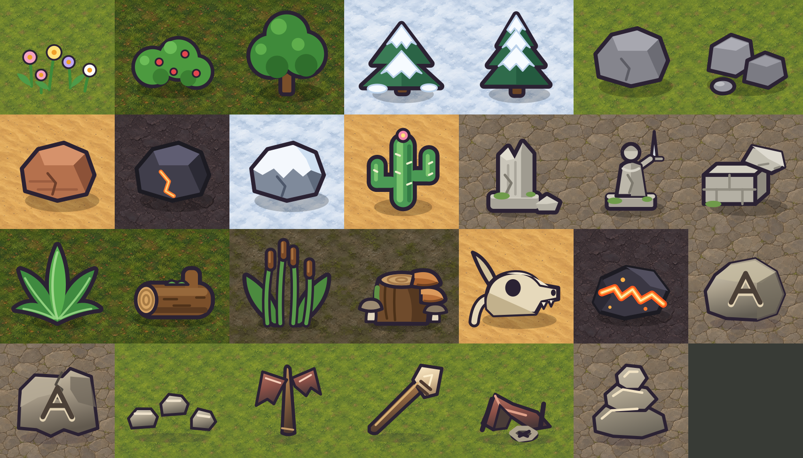
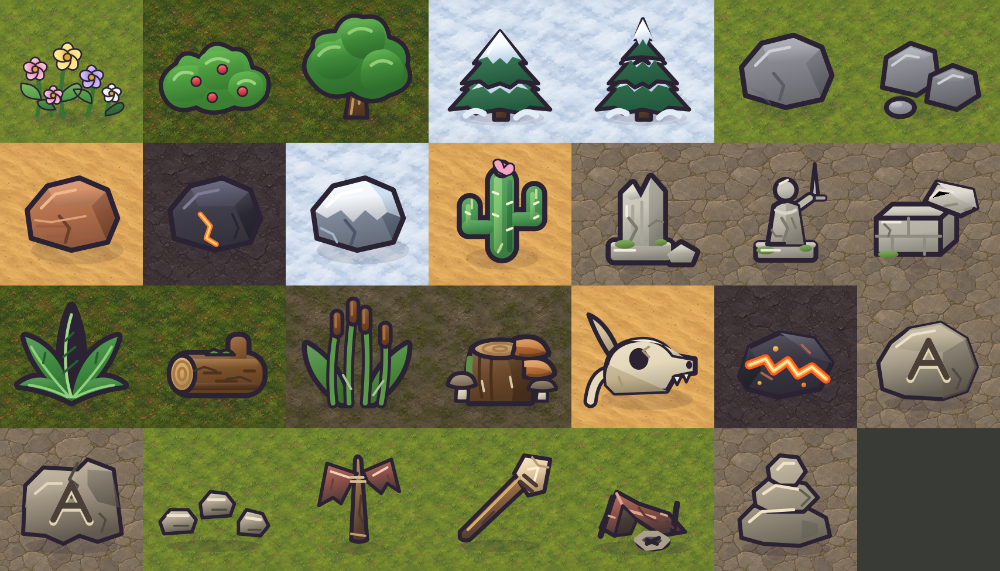
Abrir la imagen para ver el tamaño nativo de la hoja. Orden de izquierda a derecha y de arriba abajo.
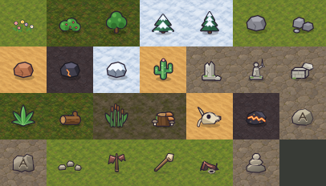
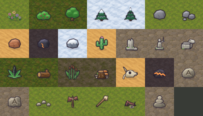
Abrir la imagen para ver el tamaño nativo de la hoja. Orden de izquierda a derecha y de arriba abajo.
| Archivo · fila/columna | Antes · 220 / 34 px | Después · 220 / 34 px |
|---|---|---|
| flores 1/1 | 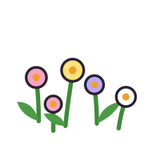 | 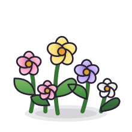 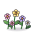 |
| bush 1/2 | 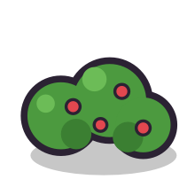 | |
| tree 1/3 | ||
| abeto 1/4 | ||
| pino 1/5 | ||
| rock_a 1/6 | 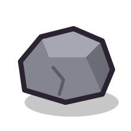 | 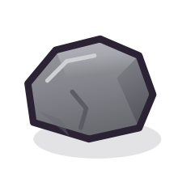 |
| rock_b 1/7 | 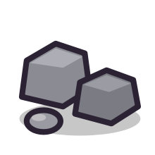 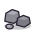 | |
| roca_roja 2/1 | 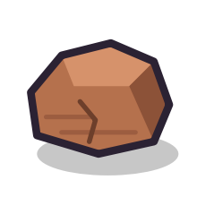 | 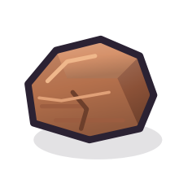 |
| roca_negra 2/2 | 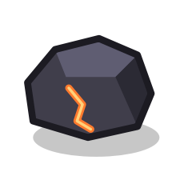 | |
| roca_nieve 2/3 | 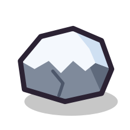 | 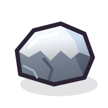 |
| cactus 2/4 | ||
| columna 2/5 | 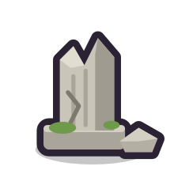 | 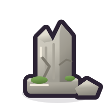 |
| estatua 2/6 | ||
| bloque 2/7 | 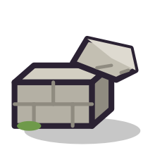 | 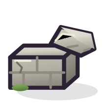 |
| helecho 3/1 | ||
| tronco 3/2 | 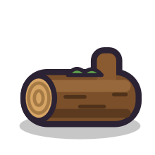 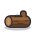 | 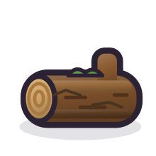 |
| junco 3/3 | ||
| hongo 3/4 | 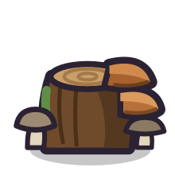 | 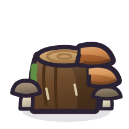 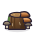 |
| huesos 3/5 | ||
| grieta 3/6 | ||
| roca_marcada 3/7 | ||
| simbolo_ruina 4/1 | ||
| sendero 4/2 | 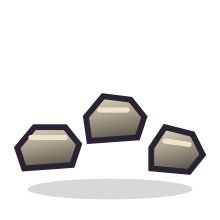 | 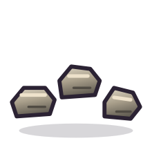 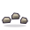 |
| poste_cintas 4/3 | 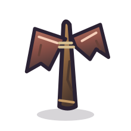 | |
| herramienta 4/4 | ||
| campamento_vacio 4/5 | 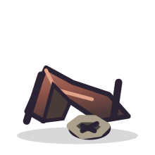 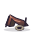 | 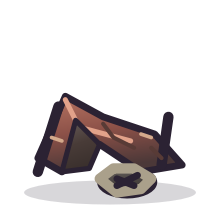 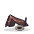 |
| hito 4/6 |
Las galerías son muestras rotuladas sobre una partida; no implican que los SVG se consuman en esa posición.
Nivel 1: galería antes galería después · partida después
Nivel 6: galería antes galería después · partida después
Nivel 8: galería antes galería después · partida después
Nivel 10: galería antes galería después · partida después